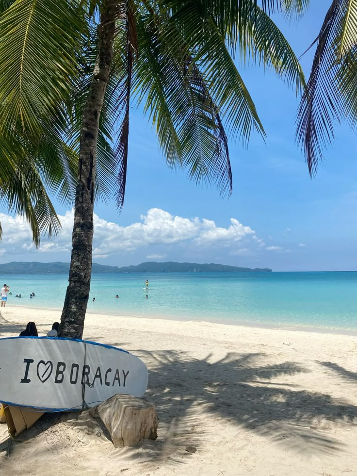
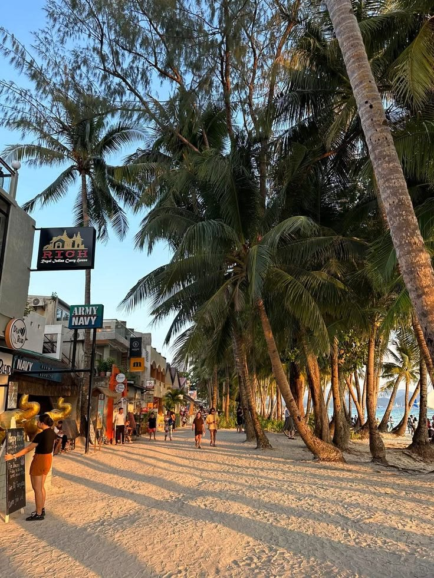
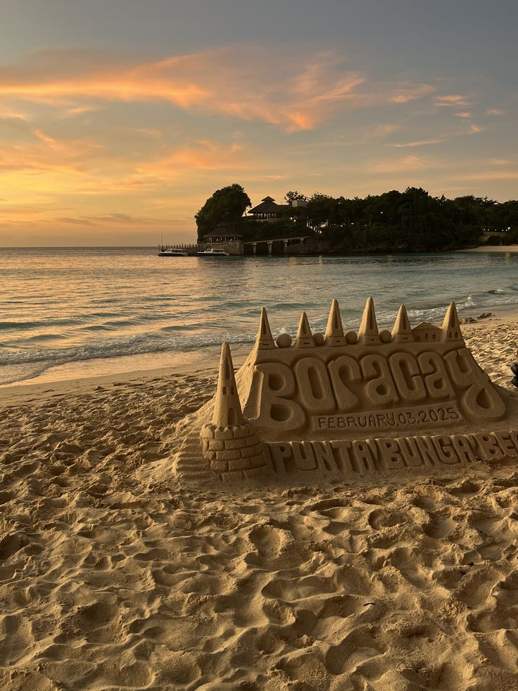
Boracay Island is located in the Province of Aklan, Western Visayas region. It is a small yet world-famous tropical resort island, renowned for its powder-fine white sand, turquoise waters, vibrant beach culture, and glowing sunsets. Activities include Island Hopping, Parasailling, Strolls along the beach, and many more.
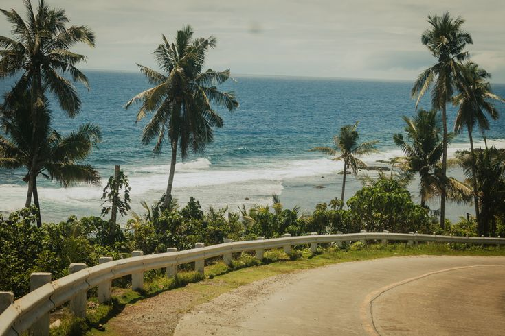
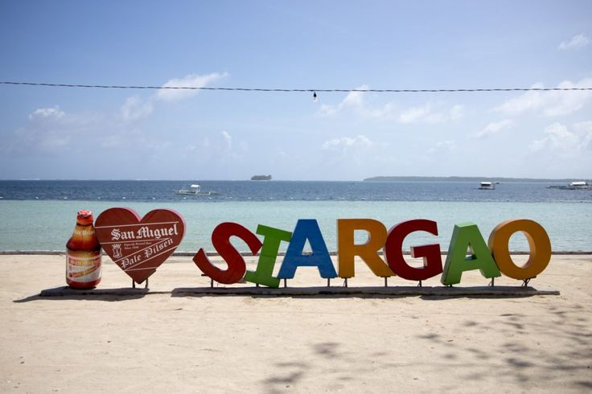
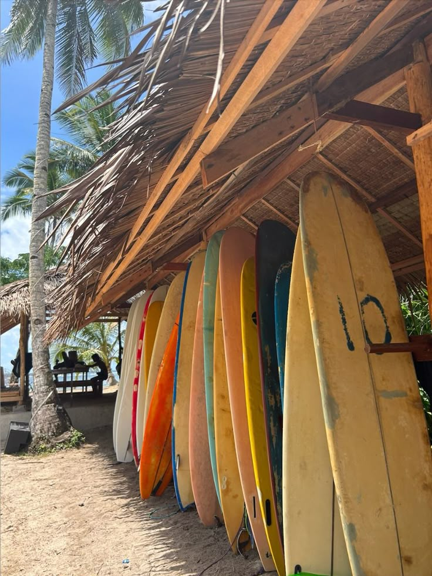
Siargao Island is located in the Province of Surigao Del Norte, Northeastern coast of Mindanao. It is a teardrop-shaped island in the Philippine Sea famous for its dense coconut palm forests, white-sand beaches, crystal-clear turquoise waters, and globally recognized surf breaks. While it is celebrated as the Surfing Capital of the Philippines, it also features tranquil mangrove systems, hidden lagoons, and a laid-back backpacker and island-life culture.
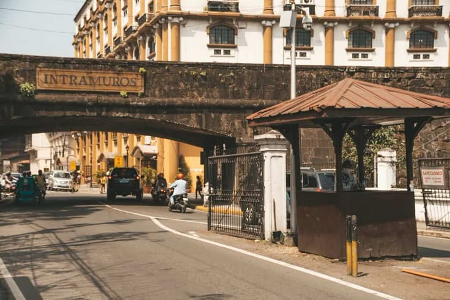
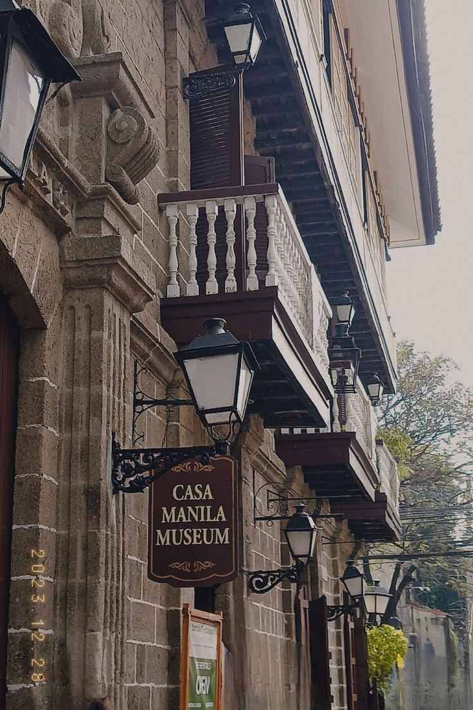
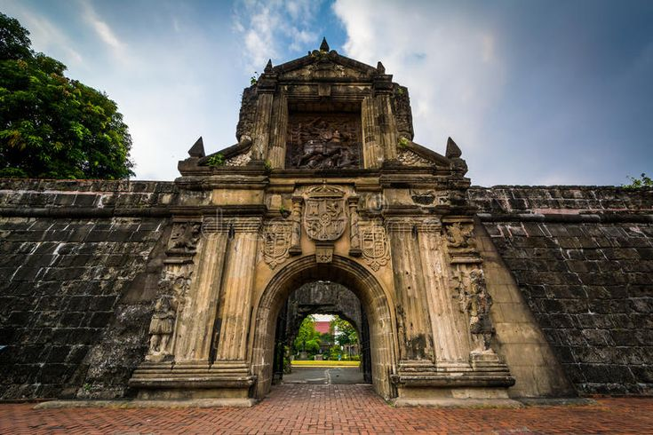
Intramuros (derived from the Latin and Spanish words meaning "within the walls"), also known as the Walled City. It is located in Metro Manila. Intramuros is a historic, 0.67-square-kilometer walled district in Manila established in 1571 by the Spanish conquistador Miguel López de Legazpi. It served as the political, military, religious, and educational center of the Spanish Empire in Asia, as well as the Asian hub for the Manila galleon trade. Though heavily damaged during World War II, the district has been partially restored and preserves stone fortifications, cobblestone streets, and Spanish-era architecture.
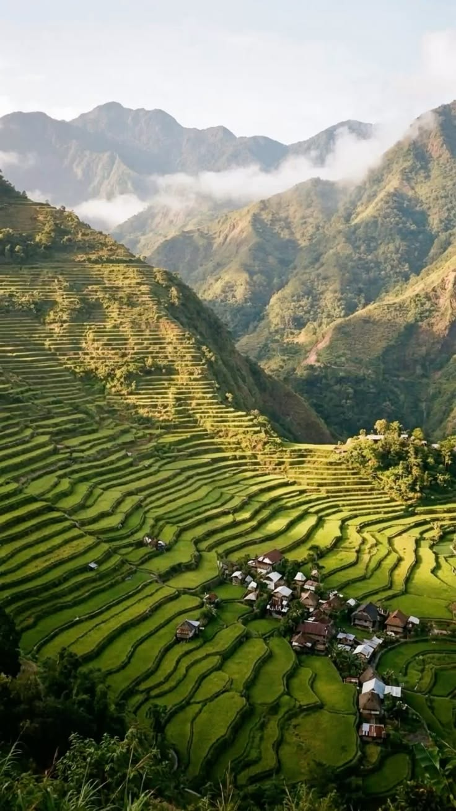
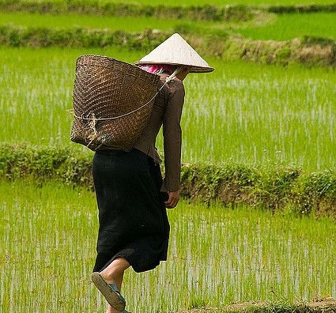
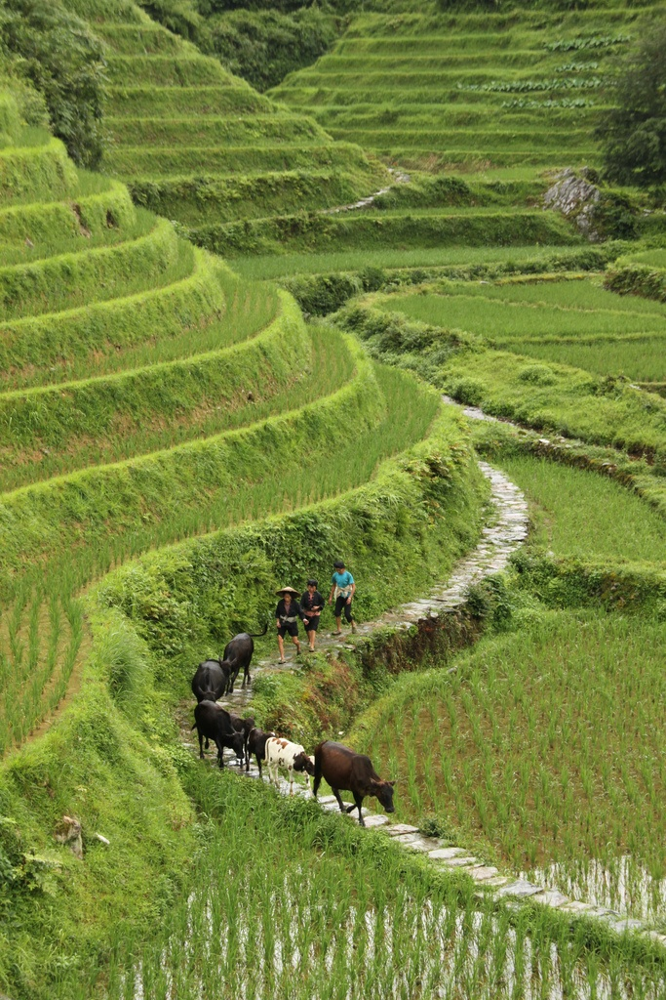
The Rice Terraces of the Philippine Cordilleras (often known as the Ifugao Rice Terraces) are a UNESCO World Heritage Site and an ancient, living cultural landscape. Built roughly 2,000 years ago by the indigenous Ifugao people, these monumental terraces were carved by hand into the steep mountain slopes of the Cordillera range. They feature an intricate system of stone and mud retaining walls coupled with an ancient mountaintop forest watershed irrigation system that still feeds the flooded pond fields today.